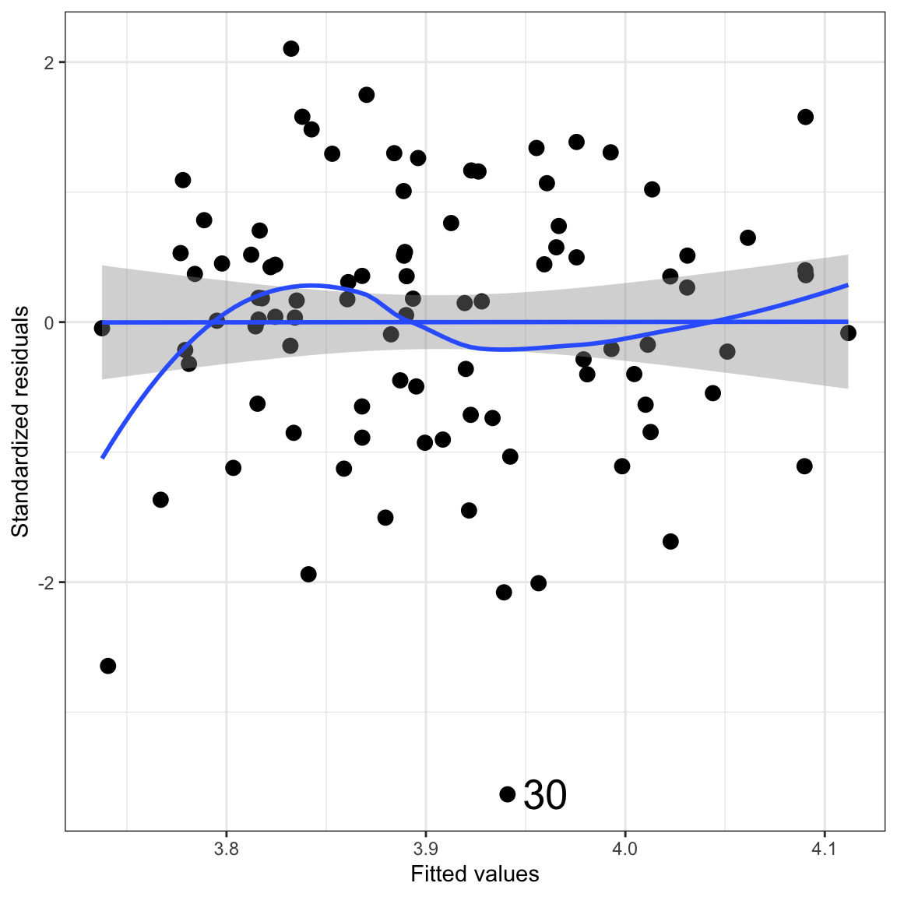
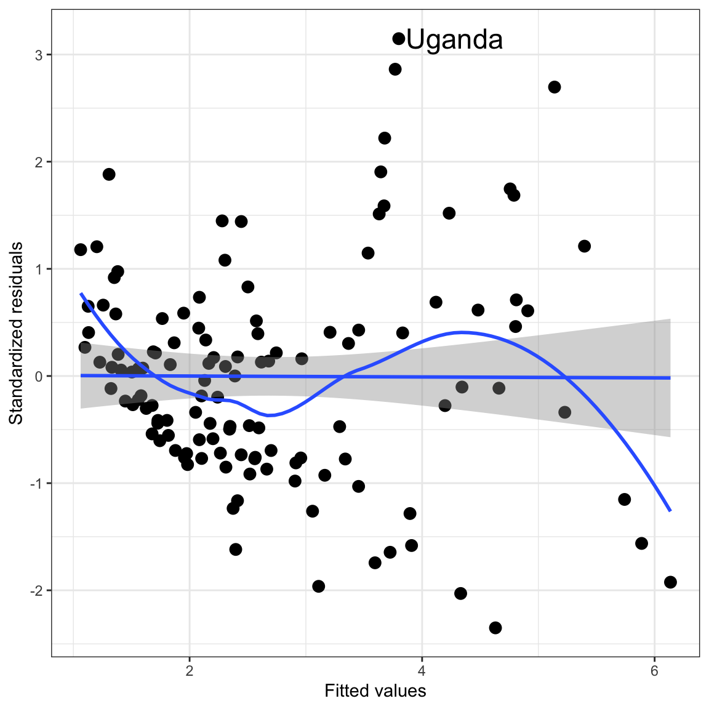

Figure 1: Marginal distribution of the average course evaluation scores.
The distribution shows some deviation from normality (left skew). This might produce problems in the regression model, but, to be sure, we will have to see how the residuals behave.
2. Create the scatterplot of the outcome vs. the predictor. Include the loess smoother in the plot. Does this relationship foreshadow problems for the linearity assumption? Explain.
Figure 2: Scatterplot displaying the relationship between average course evaluation score and professors’ rating of beauty. The loess smoother (blue) is also displayed on the plot.
The loess smoother suggests some non-linearity, however that deviation is likely just sampling error.
3. Create the density plot of the marginal distribution of the standardized residuals from the fitted model. Add the confidence envelope for the normal distribution. Does this plot suggest problems about meeting the normality assumption? Explain.
Figure 3: Density plot of the standardized residuals. A confidence envelope assuming the distribution is normally distributed is also included.
The plot suggests that the residuals deviate from normality. This deviation, however, is mild and if the remaining assumptions are tenable shouldn’t be a huge problem.
4. Create the scatterplot of the standardized residuals versus the fitted values from the fitted model. Include any smoothers and confidence envelopes that will allow you to evaluate the linearity assumption. In the plot identify observation with extreme residuals (\(\leq-3\) or \(\geq3\)) by indicating the row number of that observation in the plot.
Code
ggplot(data = out.1, aes(x = .fitted, y = .std.resid)) +geom_point(size =3) +geom_smooth(method ="lm", se =TRUE) +geom_smooth(method ="loess", se =FALSE) +theme_bw() +xlab("Fitted values") +ylab("Standardized residuals") +annotate("text", x =3.96, y =-3.63, label ="30", size =7)

Figure 4: Scatterplot of the standardized residuals versus the fitted values. The line \(y=0\) and the confidence envelope showing the expected uncertainty from that line are also displayed on the plot, along with a loess smoother. Observations with a standardized residual more than three standard errors from 0 are also identified by their row number in the data.
5. Does this plot suggest problems about meeting the linearity assumption? Explain.
The plot does not suggest any problems with linearity. The standardized residuals are evenly dispersed around the line \(y=0\). Furthermore the loess smoother is nearly completely encompassed in the confidence envelope, indicating that any deviation from linearity is a result of sampling error. The only place it deviates from this is at fitted values below 3.75, which is the result of a single observation.
6. Does this plot suggest problems about meeting the homogeneity of variance assumption? Explain.
No, the distribution of residuals at each fitted value has roughly the same range. This indicates that the homoscedasticity assumption is tenable.
7. Is the independence assumption tenable? Explain.
Maybe. Knowing one professor’s average course evaluation score probably doesn’t give you information about another professor’s evaluation score. However, an argument could be made for non-independence as well. For example, professors within the same department may influence the teaching of others in their department (or co-teach) which would make the evaluation scores dependent.
Part II: Evaluating Assumptions for the Multiple Regression Model
8. Create the density plot for the outcome. Does the distribution foreshadow problems for the normality assumption? Explain.
Figure 5: Density plot of the distribution of fertility rates.
The marginal distribution foreshadows some potential problems with the normality assumption. Not only is the distribution heavily right-skewed, but it also shows potential bimodality.
9. Create the scatterplot of the outcome vs. each predictor (three total). Include the loess smoother in each of the plots. Do any of these relationships foreshadow problems for the linearity assumption? Explain. (2pts.)
Figure 6: Scatterplot displaying the relationship between average course evaluation score and each of the three predictors. The loess smoother (blue) is also displayed on each plot.
The loess smoother suggests that the relationship between female education and fertility rate and between infant mortality rate and fertility rate are potentially non-linear. This may foreshadow problems with the linearity assumption. (The other two plots do not foreshadow issus with the linearity assumption.)
10. Create the density plot of the marginal distribution of the standardized residuals from the fitted model. Add the confidence envelope for the normal distribution. Does this plot suggest problems about meeting the normality assumption? Explain.
Figure 7: Density plot of the standardized residuals. A confidence envelope assuming the distribution is normally distributed is also included.
The residuals show no deviation from normality as the density is completely encompassed in the confidence envelope. This indicates any sample deviation from normality may be due to sampling error.
11. Create the scatterplot of the standardized residuals versus the fitted values from the fitted model. Include any smoothers or confidence envelopes that will allow you to evaluate the linearity assumption. In the plot identify observation with extreme residuals (\(\leq-3\) or \(\geq3\)) by indicating the country associated with that observation in the plot.
Code
extreme = out.2|>mutate(country = fert$country) |>filter(abs(.std.resid) >3)ggplot(data = out.2, aes(x = .fitted, y = .std.resid)) +geom_point(size =3) +geom_smooth(method ="lm", se =TRUE) +geom_smooth(method ="loess", se =FALSE) +theme_bw() +xlab("Fitted values") +ylab("Standardized residuals") +annotate("text", x =3.86, y =3.15, label ="Uganda", hjust =0, size =6)

Figure 8: Scatterplot of the standardized residuals versus the fitted values. The line \(y=0\) and the confidence envelope showing the expected uncertainty from that line are also displayed on the plot, along with a loess smoother. Observations with a standardized residual more than three standard errors from 0 are also identified by their country name.
12. Does this plot suggest problems about meeting the linearity assumption? Explain.
Yes. The loess smoother deviates from the confidence envelope at several places. This indicates that the linearity assumption may not be tenable.
13. Does this plot suggest problems about meeting the homogeneity of variance assumption? Explain.
Yes. The plot shows fanning in which the variation in the standardized residuals gets larger at larger fitted values.
14. Is the independence assumption tenable? Explain.
Probably. There is no cluster, spatial or longitudinal sampling that has taken place. It is also unlikely that the fertility rate in one country has much relationship with the fertility rate in any other country.